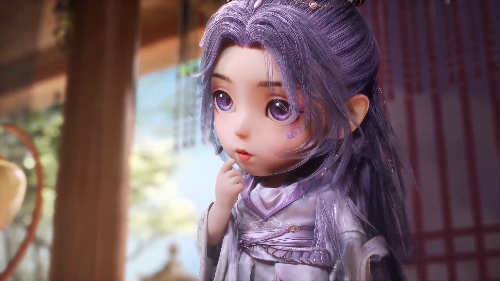
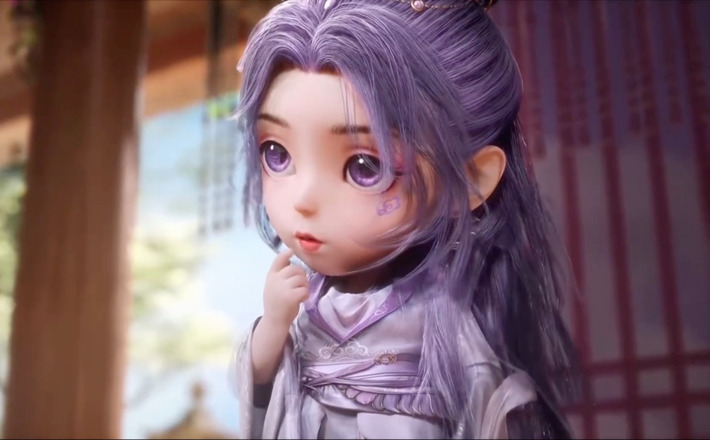

你说「这些小标签都可以改成 Q 版小人」——可以，但**照片级的人物缩到导航图标那么小会糊成一团色块**。
这个原型把几种尺寸真实渲染出来（不是示意图），你看哪个能接受。
下面所有头像都是官方动画原片，只靠 CSS 裁圆，图没改过一个像素。

资金管理
每日发现输一个美股代码，财报从 SEC 官方 10-K 抓、价格从交易所抓，十来年的数字自动铺开。
三路全部完成，已同步 3 篇
暂无流水
0 天 · 今天还没开始
| 模块 | 图 | 画面 / 为什么配它 | 建议位置 |
|---|---|---|---|
| 工作台 | 托腮、户外、金色发冠 —— 脸最大最清楚，留给首页 | 焦点卡 132px | |
| 计划打卡 | 双手合十，像在许愿 —— 配「年度目标」 | 页头 96px | |
| 资金管理 | 木格窗边托下巴，神情认真 —— 配算账 | 页头 96px | |
| 每日发现 | 同场景另一角度，眼神向外 —— 配「发现」 | 空态 96px | |
| AI 大事 | 云海半身 —— 配「俯视全局的时间线」 | 页头 96px | |
| 知识库 | 竖版捧脸特写 —— 配「收集与沉淀」 | 页头 96px | |
| 奇思妙想 | 复用托腮（在想事情） | 页头 96px | |
| 好公司 | 复用双手合十 | 页头 96px |